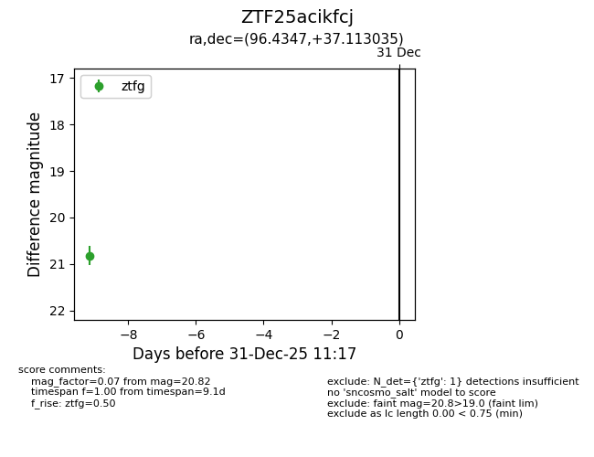
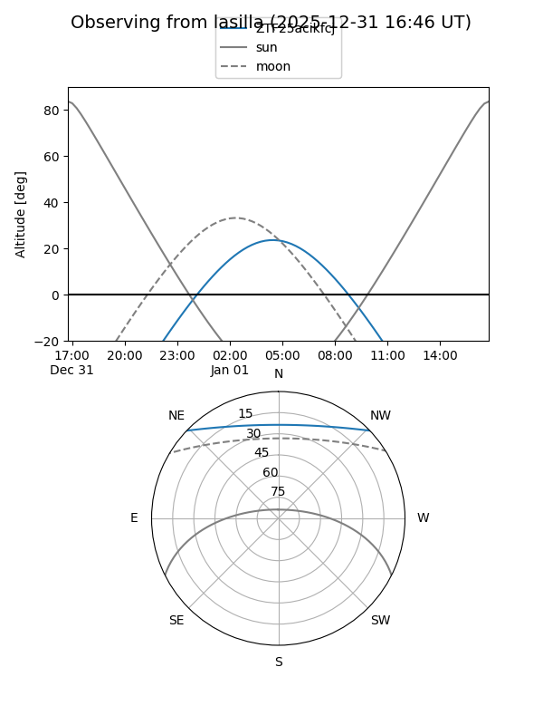
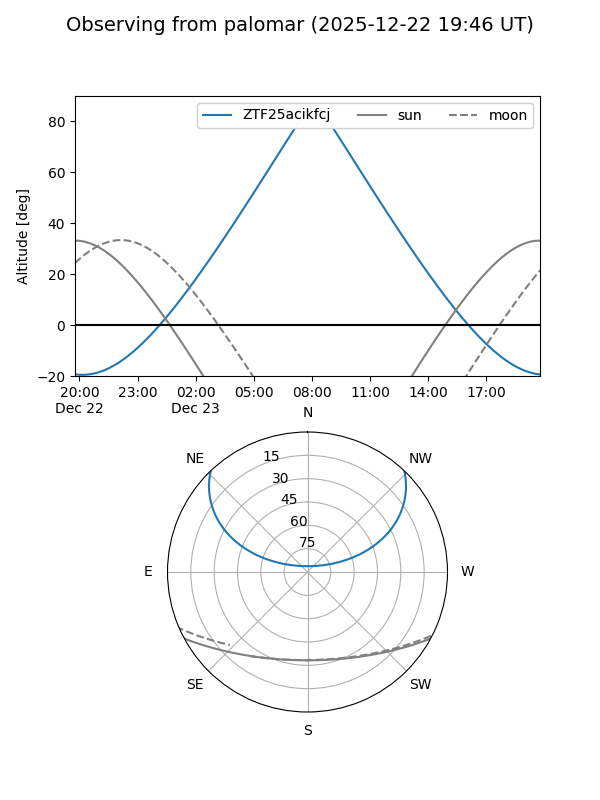

ZTF25acikfcj
Target ZTF25acikfcj at 2025-12-31 18:00
Aliases and brokers:
FINK: link
Lasair: link
ALeRCE: link
alt names
ZTF25acikfcj (ztf,fink_ztf)
Coordinates:
equatorial (ra, dec) = 96.4347,+37.11303
equatorial (HMS+DMS) = 06:25:44.33,+37:06:46.93
galactic (l, b) = (176.8394,+11.28676)
Flags:
Photometry:
last ztfg=20.82
1 ztfg detections
Lightcurve

Visibility


Additional plots